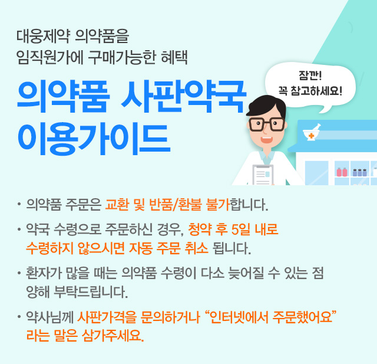
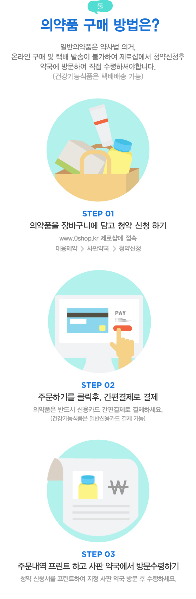
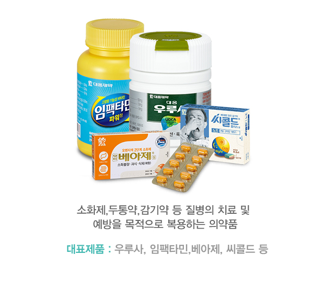
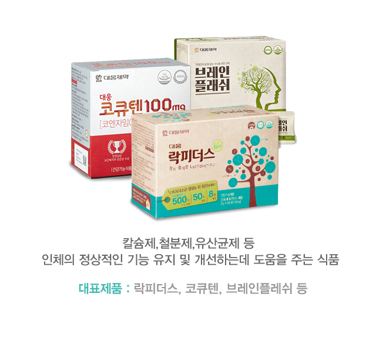
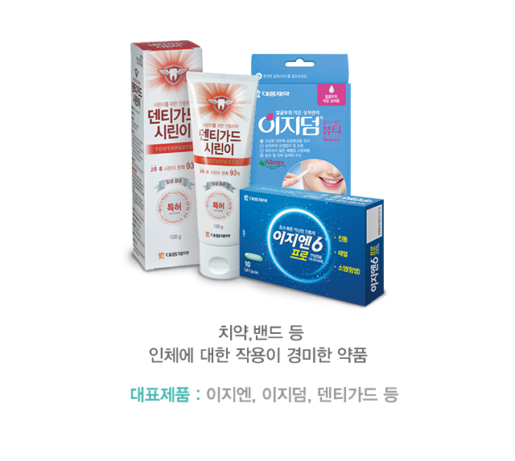
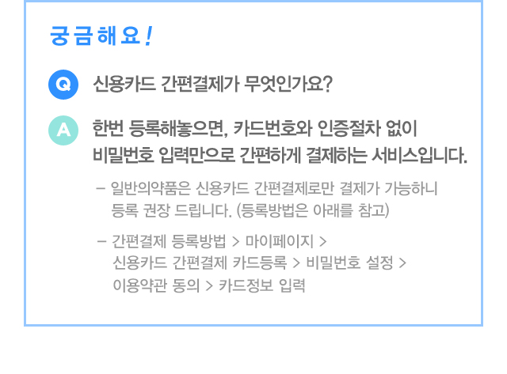
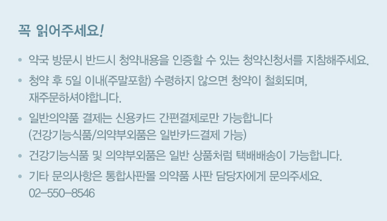
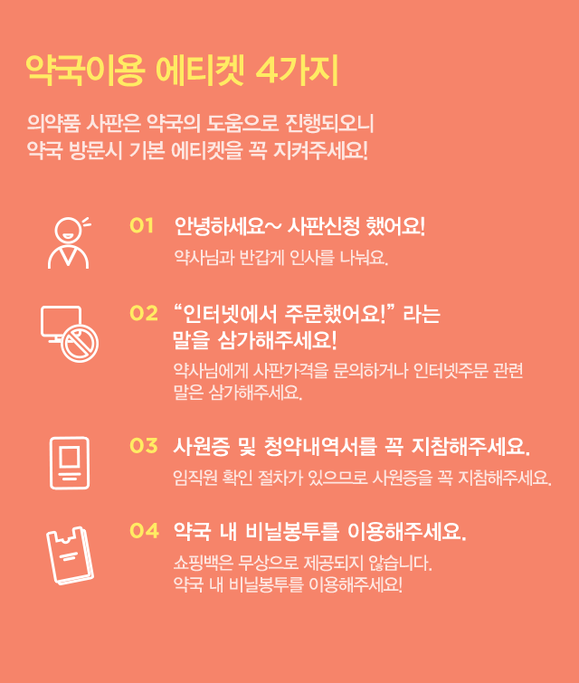

의약사판

의약품 사판약국 이용가이드
자세히 보기
대웅제약 의약품을 임직원가에 구매가능한 혜택
- 의약품 주문은 교환 및 반품/환불이 불가합니다.
- 약국 수령의 경우, 청약 후 5일 이내로 수령하지 않으시면 자동 취소됩니다.
- 환자가 많을 때는 의약품 수령이 다소 늦어질 수 있는 점 양해 부탁드립니다.
- 약사님께 사판가격을 문의하거나 “인터넷에서 주문했어요” 라는 말은 삼가주세요.
사판약국 이용가이드

닫기

의약품 사판약국 이용가이드
의약품 사판약국이란?임직원의 건강을 위하여 의약품을 대웅제약 임직원가에 제공하는 직원 복지헤택입니다.

일반의약품
소화제,두통약,감기약 등 질병의 치료 및 예방을 목적으로 복용하는 의약품
대표제품 : 우루사, 임팩타민,베아제, 씨콜드 등

건강기능식품
칼슘제,철분제,유산균제 등 인체의 정상적인 기능 유지 및 개선하는데 도움을 주는 식품
대표제품 락피더스, 코큐텐, 브레인플레쉬 등

의약부외품
치약,밴드 등 인체에 대한 작용이 경미한 약품
대표제품 : 이지엔, 이지덤, 덴티가드 등
의약품 구매 방법은?

일반의약품은 약사법 의거, 온라인 구매 및 택배 발송이 불가하여 제로샵에서 청약신청후 약국에 방문하여 직접 수령하셔야합니다.(건강기능식품은 택배배송 가능)
- STEP 01 의약품을 장바구니에 담고 청약 신청 하기 www.0shop.kr 대웅제약 > 사판약국 > 청약신청
- STEP 02 주문하기를 클릭후, 간편결제로 결제 의약품은 반드시 신용카드 간편결제로 결제하세요. (건강기능식품은 일반신용카드 결제 가능)
- STEP 03 주문내역 프린트 하고 사판 약국에서 방문수령하기 청약 신청서를 프린트하여 지정 사판 약국 방문 후 수령하세요.
궁금해요!

- Q 신용카드 간편결제가 무엇인가요?
-
A 한번 등록해놓으면, 카드번호와 인증절차 없이 비밀번호 입력만으로 간편하게 결제하는 서비스입니다.
- 일반의약품은 신용카드 간편결제로만 결제가 가능하니 등록 권장 드립니다. (등록방법은 아래를 참고)
- 간편결제 등록방법 > 마이페이지 > 신용카드 간편결제 카드등록 > 비밀번호 설정 > 이용약관 동의 > 카드정보 입력
꼭 읽어주세요!
일반의약품은 약사법 의거, 온라인 구매 및 택배 발송이 불가하여 제로샵에서 청약신청후 약국에 방문하여 직접 수령하셔야합니다.(건강기능식품은 택배배송 가능)
- 약국 방문시 반드시 청약내용을 인증할 수 있는 청약신청서를 지참해주세요.
- 청약 후 5일 이내(주말포함) 수령하지 않으면 청약이 철회되며, 재주문하셔야합니다.
- 일반의약품 결제는 신용카드 간편결제로만 가능합니다 (건강기능식품/의약부외품은 일반카드결제 가능)
- 건강기능식품 및 의약부외품은 일반 상품처럼 택배배송이 가능합니다.
- 기타 문의사항은 통합사판몰 의약품 사판 담당자에게 문의주세요. 02-550-8546

지도영역 (대웅 / 원앤원 / 유닉스 / 국순당/ 샘표/ 불스원 /풀무원)

삼성약국
서울 강남구 삼성동
- 주소
- 서울특별시 강남구 봉은사로 640 에스빌딩
- 영업시간
- 평일 9:30 - 20:00 / 토요일 11:00 - 15:00 / 일요일 휴무
지도영역 (대웅)
우리약국
경기도 성남시
- 주소
- 경기도 성남시 중원구 둔촌대로 449 중앙인더스피아
- 영업시간
- 평일 9:00 - 20:00 / 토요일 9:00 - 15:30 / 일요일 휴무
지도영역 (애경)
정수메디칼약국
서울특별시 구로구
- 주소
- 서울특별시 구로구 구로중앙로 68 신안타워
- 영업시간
- 평일 8:30 - 20:00 / 토요일 8:30 - 14:30 / 일요일 휴무
지도영역 (매일유업)
인앤아웃약국
서울특별시 종로구
- 주소
- 서울특별시 종로구 종로 19 르메이에르종로타운 4층 421호
- 영업시간
- 평일 10:00 ~ 19:30 / 토요일 10:00~13:30 / 일요일 휴무
지도영역 (네이버)
스타파크 약국
본사에서 도보 5분!
- 주소
- 경기도 성남시 분당구 정자일로 121 A-15 (정자동, 분당더샵스타파크상가)
- 영업시간
- 평일 9:00 - 19:30 / 토요일 9:00 - 15:00 / 일요일 휴무

약국이용 에티켓 4가지
의약품 사판은 약국의 도움으로 진행되오니 약국 방문시 기본 에티켓을 꼭 지켜주세요!
- 01 안녕하세요~ 사판신청 했어요! 약사님과 반갑게 인사를 나눠요.
- 02 “인터넷에서 주문했어요!”라는 말을 삼가해주세요 약사님에게 사판가격을 문의하거나 인터넷주문 관련 말은 삼가해주세요.!
- 01 사원증 및 청약내역서를 꼭 지참해주세요. 임직원 확인 절차가 있으므로 사원증을 꼭 지참해주세요.
- 01 약국 내 비닐봉투를 이용해주세요. 쇼핑백은 무상으로 제공되지 않습니다. 약국 내 비닐봉투를 이용해주세요!